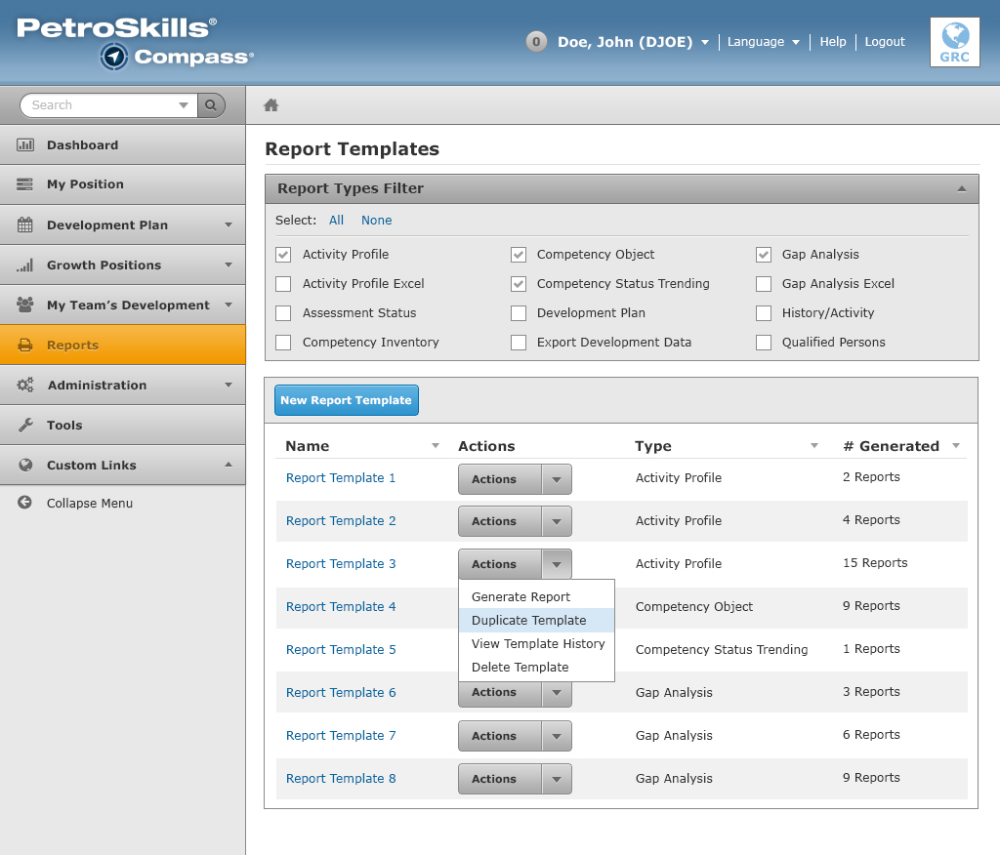
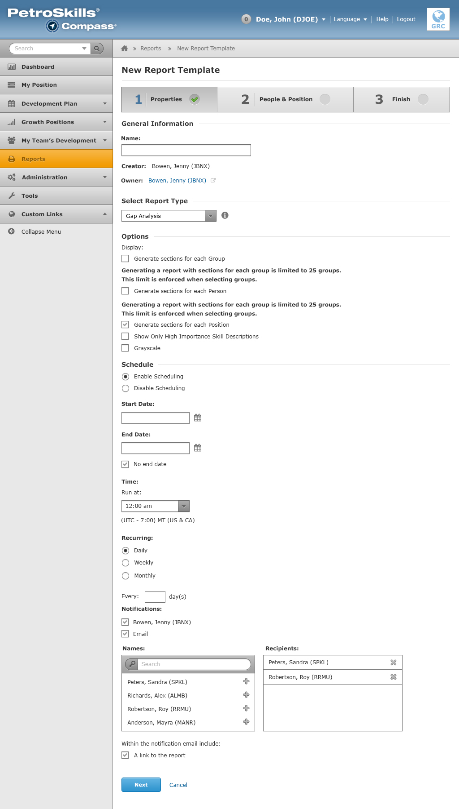
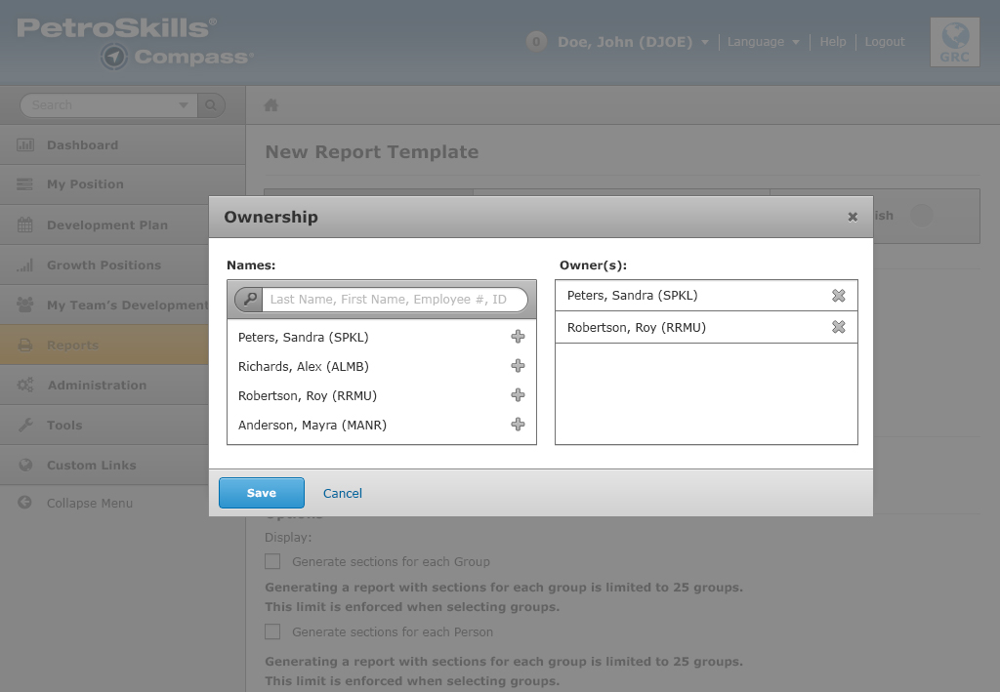
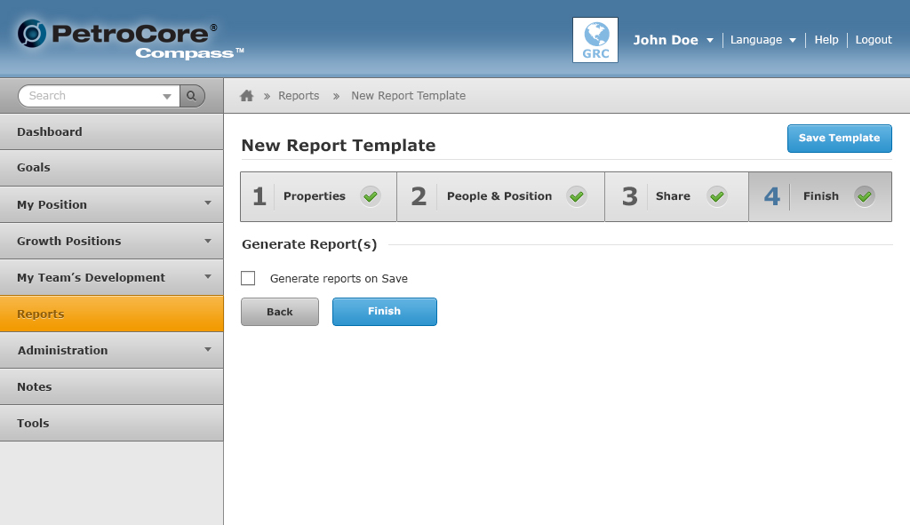

Reports
The Reports section covers as follows:
- Reports Template Homepage
- New Report Template
- Edit Report Template
Report Templates
The Report Templates page consists of three important UI elements:
- Report Types Filter: This filter controls what data is displayed in the table below.
- Table Action Bar: This action bar is placed above the table. The action bar consists of buttons that interact with the table below. For example, a user can delete multiple report templates by checking a number of checkboxes and clicking on the delete button.
- Data Table: Tabular data are displayed in a data table. Table columns can be sorted by clicking on the table header (where the up and down arrows are located).
New Report
Step 1
In Step 1, the content displayed consists of: General Information, Select Report Type, Options, and Schedule. All sections are required form fields except for Schedule. The user can turn the schedule feature on or off.
The Ownership modal window pops up from clicking on the Owner name.
Step 2
In Step 2, it consists of two sections: (1) Select People and (2) Select Position. Both are required form fields.
Step 3

In Step 3, a user can control who has access to the report template. They can define to either Positions, Groups or both.
Step 4
In Step 4, the user can finish creating the new report template by clicking on the Finish button. They also have the option to have the reports generated on save.
Edit Report Template

This page allows the user to be able to go back and make edits to the report templates that they have created.
When the user has generated some reports from their report template, the Reports tab will display a data table containing their generated reports.